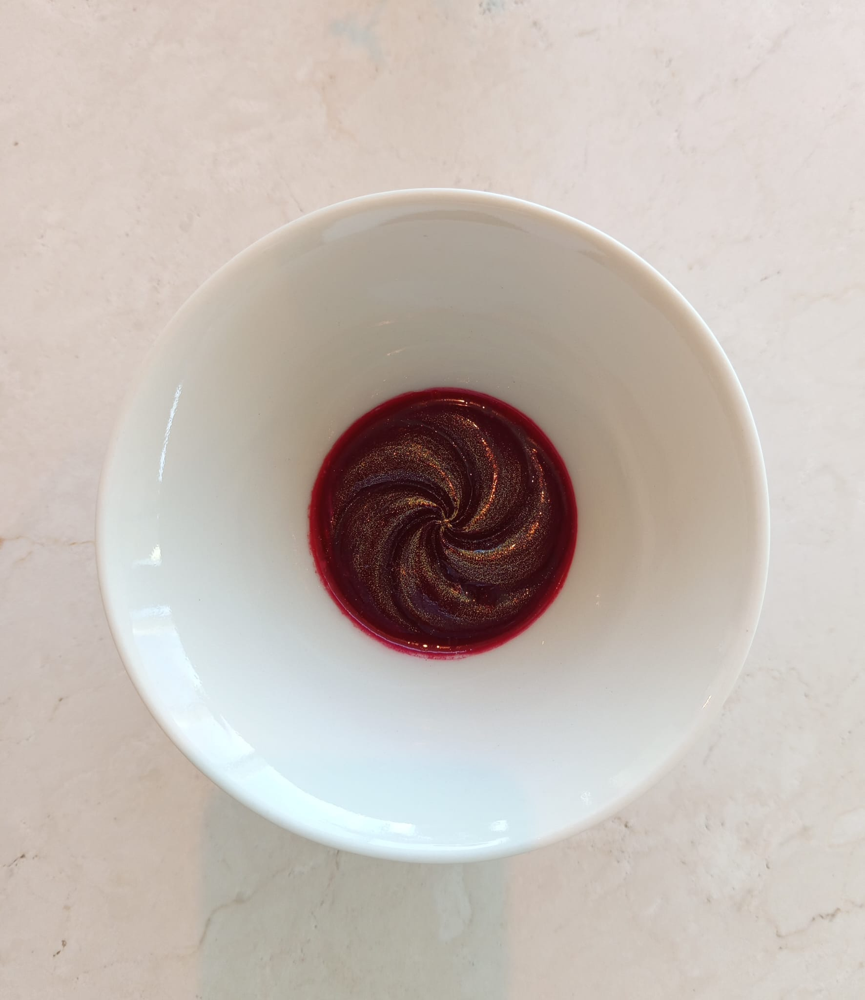
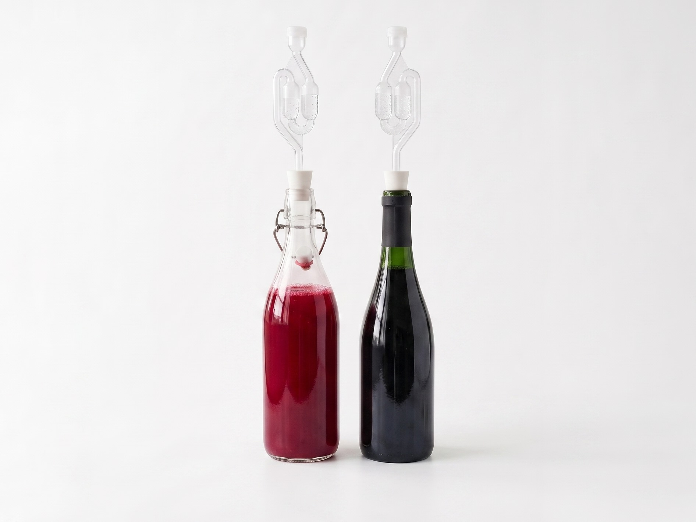
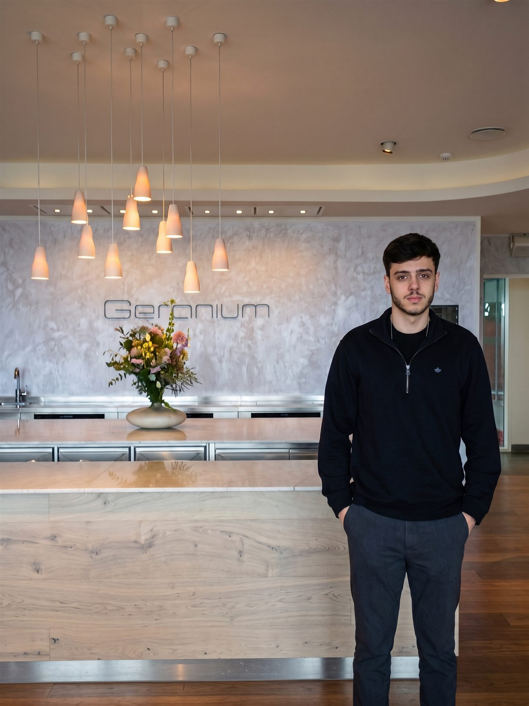
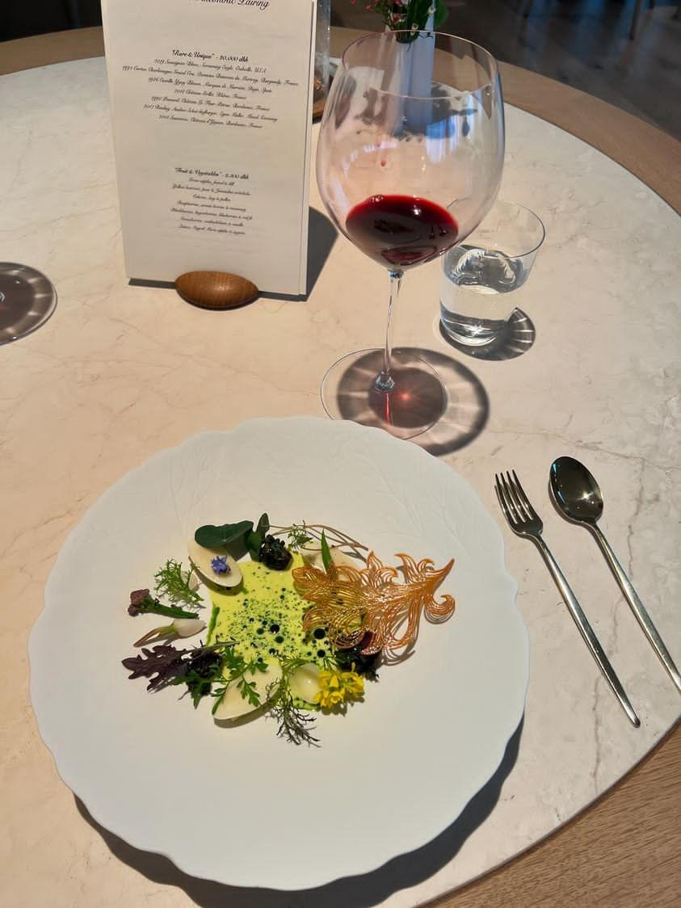
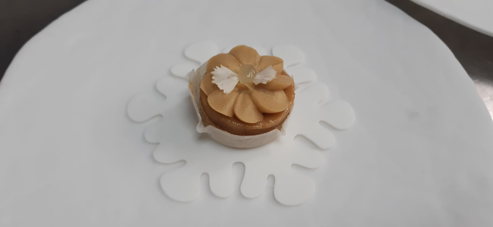
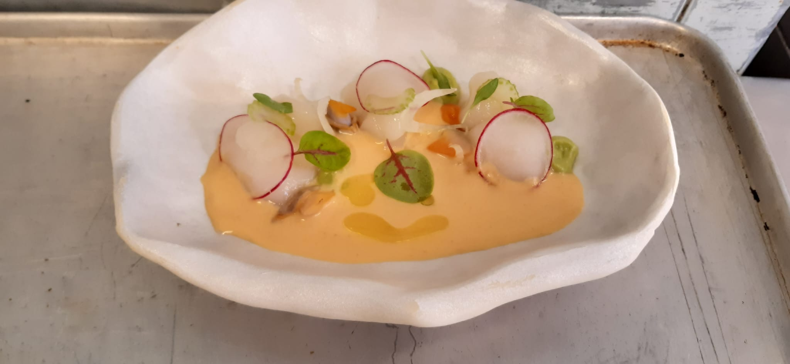
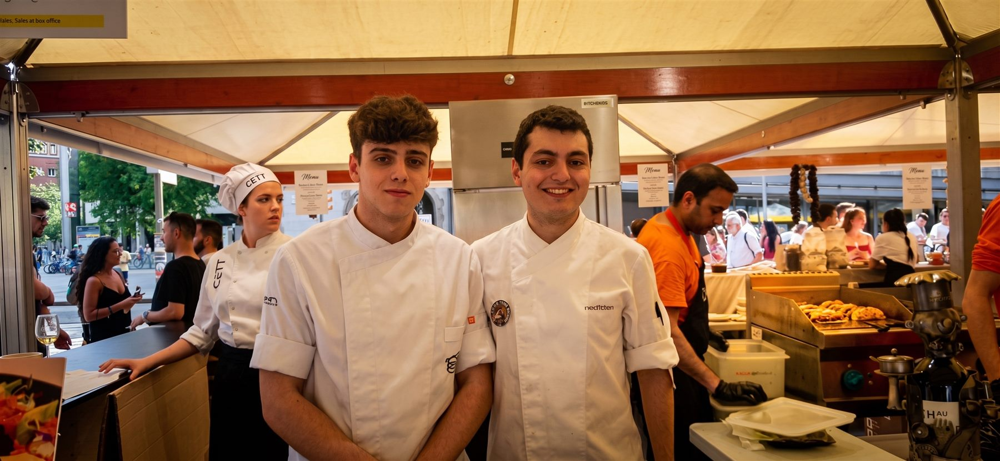
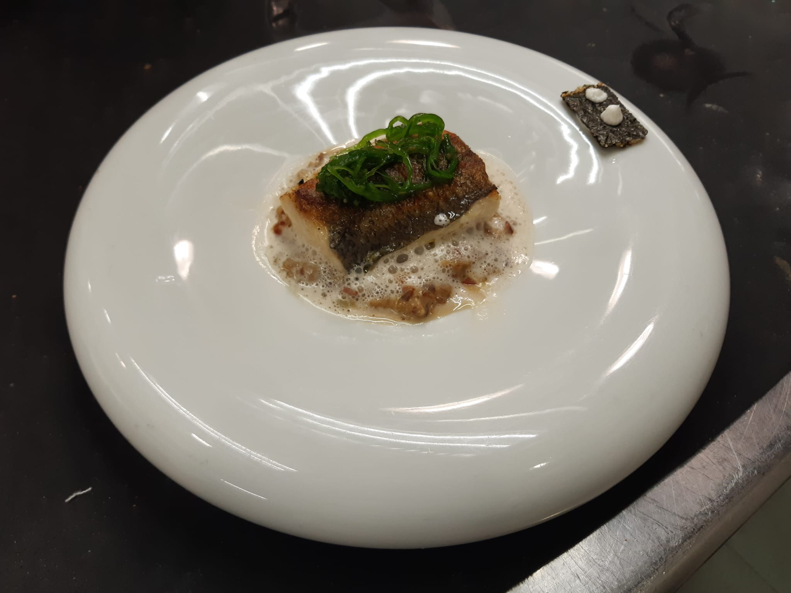
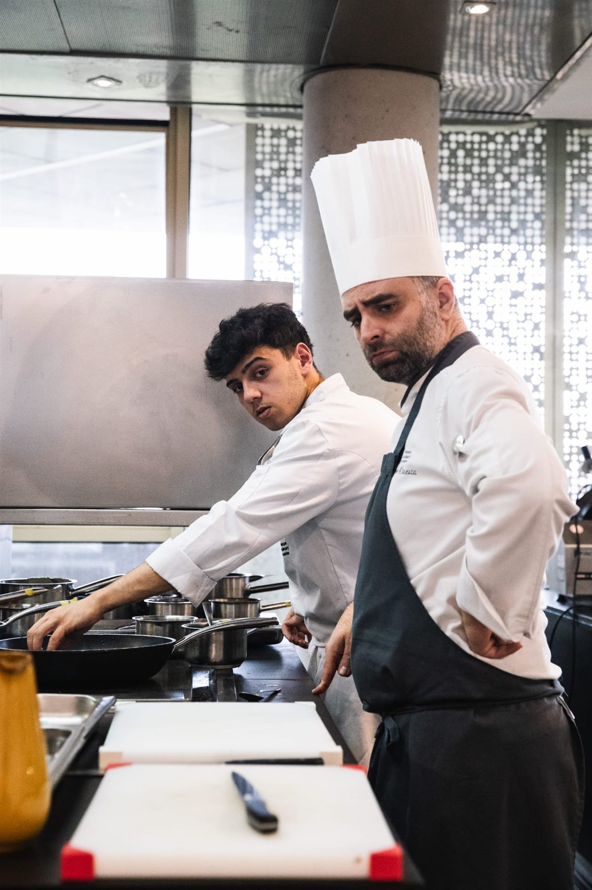
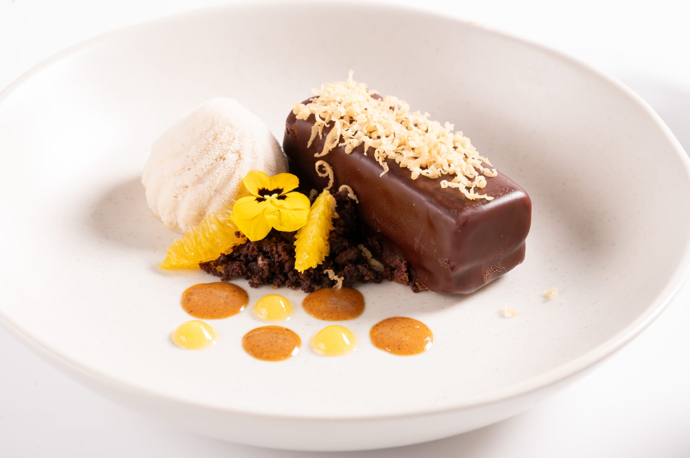

Work Experience
Four years of hands-on kitchen practice, from a first internship in Barcelona to running stations inside a 3-Michelin-star restaurant in Copenhagen.
R&D Intern & Chef de Partie
Geranium Restaurant · Copenhagen
3 Michelin stars
- Re-hired with the main purpose of developing the University's Bachelor's Thesis.
- Investigated the application of food enzymes.
- Developed scalable methods to transform food waste into fermented subproducts, creating solutions for sustainable ingredient production.


Chef de Partie
Geranium Restaurant · Copenhagen
3 Michelin stars
- Managed and took responsibility for four different kitchen stations within a rigorous 3-Michelin-star kitchen.
- Maintained consistency through team collaboration and cross-departmental collaboration.
- Engaged directly with diners during service to perform tableside plating and deliver an elevated, interactive guest experience.


Intern
Paco Roncero Restaurant · Madrid
2 Michelin stars
- Assisted in the meticulous daily preparation and execution of high-end tasting menus in a fast-paced 2-Michelin-star kitchen.
- Advanced culinary techniques, discipline and organization.


Intern
Nectari Restaurant · Barcelona
- Mise en place and daily menu execution.
- Foundational fine-dining skills and rigorous practical demands.


Bachelor's Degree in Culinary Sciences
Basque Culinary Center University
- A four-year program, foundation for every placement above, combining professional kitchen training with the scientific study of food.
- Paused for a year to work as Chef de Partie at Geranium before returning to complete the degree.


Curious about the science behind the plates?
See how fermentation, data and 3D design shape my approach to food on the Scientific Expertise page.